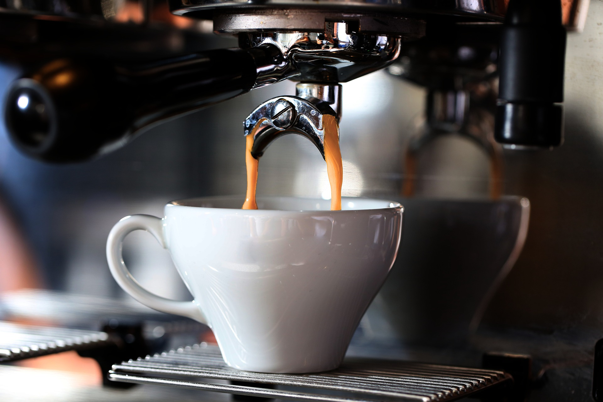
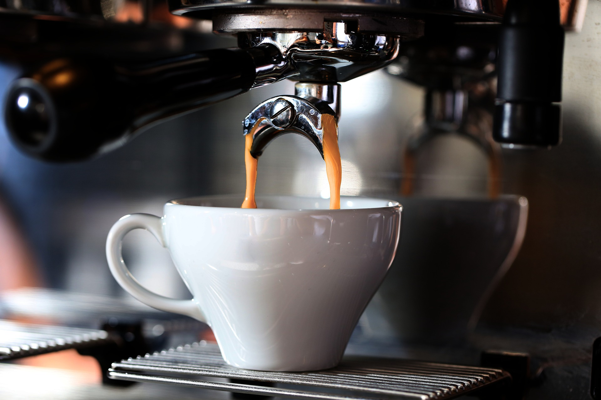

Cafeaua este printre cele mai comune băuturi. Aceasta face parte din rutina de zi cu zi a multor oameni indiferent dacă este savurată dimineața pentru a furniza energie, după-amiaza ori după prânz.

"fluid ușor creativ"
Floyd Maxwell
Cafeaua este printre cele mai comune băuturi. Aceasta face parte din rutina de zi cu zi a multor oameni indiferent dacă este savurată dimineața pentru a furniza energie, după-amiaza ori după prânz.

Cafeaua provine din semințele sau boabele extrase din fructele arborelui de cafea. Atunci când torni apa fierbinte peste aceste boabe uscate, prăjite și măcinate, vei obține băutura aromată atât de apreciată de milioane de oameni la nivel mondial.


Știai că, țara în care au fost folosite pentru prima dată boabele de cafea este Etiopia utilizându-se pentru menținerea stării de veghe în timpul rugăciunilor?
Astăzi, aproape întreaga producție de cafea vine din America Centrală, Brazilia și părțile tropicale ale Americii de Sud. Producția mondială de cafea se ridică pe la 100 de milioane de saci pe an, iar Brazilia este pe primul loc reprezentând ¼ din producția totală, 8 milioane de saci fiind produși în Brazilia.
Cele mai importante două soiuri de plante de cafea sunt Arabica și Robusta: ~60 % din cafeaua produsă în întreaga lume este Arabica și ~40 % este Robusta. Boabele de cafea Arabica contin 0,8–1,4 % cafeină și cele de tip Robusta 1,7–4 %. Brazilia este cea mai cunoscuta tara pentru productia de cafea Arabica, in timp ce Vietnam este recunoscuta pentru cafeaua de tip Robusta.
Câți băutori de cafea există pe lumea asta, tot atâtea motive există să iubești cafeaua. Fiecare băutor de cafea o „știe pe a lui”, fiecare o preferă într-un fel anume, iar cafeaua este parte integrantă din țesutul social și cultural al umanității. La fel de adevărat însă că dragostea pentru cafea „vine la pachet” – spre norocul celor care o iubesc – cu nu puține avantaje pentru sănătate.
Consumatorii de cafea au un risc mai mic de deces prematur. Mai mult, studiile arată că, cafeaua te poate face mai fericit, reducând riscul de depresie și sinucidere cu 20% și 53%.
Diabetul de tip 2 este o problemă majoră de sănătate, care afectează în prezent milioane de oameni din întreaga lume.Aceasta se caracterizează prin nivelul crescut de zahăr din sânge cauzat de rezistența la insulină sau o capacitate redusă de a secreta insulina.
Studiile observă că, persoanele care beau cafea au un risc de 50-23% mai mic de a avea această boală.
Boala Parkinson este a doua cea mai frecventă afecțiune neurodegenerative dupa Alzheimer fiind cauzată de moartea neuronilor care generează dopamina din creier.Ca și în cazul bolii Alzheimer, nu există nici un leac cunoscut.
Studiile arată că băutorii de cafea au un risc mult mai mic de boala Parkinson, cu o reducere a riscului variind de la 32-60% .
Boala Parkinson este a doua cea mai frecventă afecțiune neurodegenerative dupa Alzheimer fiind cauzată de moartea neuronilor care generează dopamina din creier.Ca și în cazul bolii Alzheimer, nu există nici un leac cunoscut.
Studiile arată că băutorii de cafea au un risc mult mai mic de boala Parkinson, cu o reducere a riscului variind de la 32-60% .
Consumul excesiv de cafea poate duce la apariția unor efecte adverse, cum ar fi intensificarea stării de anxietate, tahicardie, dureri de cap și deteriorarea calității somnului.
De asemenea, persoanele care suferă de hipertensiune, dermatită seboreică și reflux gastric trebuie să își limiteze sau să elimine consumul de cafea, deoarece cofeina le poate potența afecțiunile.
Cafeaua mai conține și o serie de substanțe uleioase care odată ingerate, cresc riscul de boli de inimă. Aceste substanțe se numesc diterpeni, cum ar fi cafestol și kahweol. Ele ajung în organism dacă bei cafea nefiltrată – cafea obtinută cu ajutorul presei franceze sau cafea la ibric.
 

Cafeaua devine nociva atunci când este consumată împreună cu lapte condensat și zahăr. Acestea cresc aportul de calorii, nivelul de grăsimi saturate din organism și cantitatea de zahăr din sânge, favorizând astfel creșterea în greutate.

Cafeaua neagră, inclusiv espresso este cea mai potrivită, are mai puțin de 10 de calorii pe o ceașcă de 200ml. Dacă doriți să tăiați calorii și să vă păstrați cafeaua cât mai sănătoasă încercati să omiteți aceste ingrediente.
.jpg)
Cofeina este folosită de milioane de oameni, zi de zi, pentru obţinerea energiei şi îmbunătăţirea nivelului de concentrare fiind cel mai consumat drog din lume.
Se găsește în principal în semințele arborelui de cafea, dar frunzele de ceai (Thea sinensis) si cotiledoanele semintelor de cacao (Theobroma cacao) sunt, de asemenea, surse de cafeina.
Cofeina stimulează sistemul nervos, semnalând celulele adipoase pentru a rupe țesutul adipos din organism.
Dar, de asemenea, crește epinefrina /adrenalina în sânge. Acesta este hormonul de luptă care vă pregătește corpul pentru efort fizic intens.
Cofeina descompune grăsimea corpului, ceea ce face acizi grași liberi să fie disponibili ca combustibil. Având în vedere aceste efecte, cofeina poate îmbunătăți performanța fizică cu 11-12%, în medie.
Cofeina se găsește în aproape fiecare supliment comercial de ardere a grasimilor. Este una dintre puținele substanțe naturale dovedite pentru a ajuta la arderea grasimilor.
Mai multe studii arată că, cofeina poate stimula metabolismul cu 3-11%.
Alte studii indică faptul că, cofeina poate stimula în mod special arderea grasimilor cu până la 10% la persoanele obeze și 29% în oameni slabi.
Cu toate acestea, este posibil ca aceste efecte să se diminueze la băutorii de cafea pe termen lung.
Boala Alzheimer este cea mai frecventă boală neurodegenerativă și principala cauză a demenței la nivel mondial. Această boala afectează, de obicei, persoanele peste 65 de ani, și nu există nici un leac cunoscut.
Cu toate acestea, există mai multe lucruri pe care le puteți face pentru a preveni apariția bolii cum ar fi adoptarea unui stil de viata sanatos, dar cofeina poate fi incredibil de eficientă, de asemenea.
Mai multe studii arată că, persoanele care consuma bauturi care conton cafeina au un risc de până la 65% mai mic de boala Alzheimer.
După ce bei cafea, cofeia este absorbiă de celulele din sânge, urmând ca aceasta să fie transportată la creier.
În creier, cafeina blochează neurotransmițătorii inhibitori de adeonozia permintând altor neurotransmițătoră, ca de exemplu dopamina și norepinefrina să crească, ducând la “îmbunătățirea” neuronilor.
Deasesmenea, multe studii au arătat că, cofeina îmbunătățește diferite aspecte ale funcției cerebrale - inclusiv memoria, starea de spirit, vigilența, timpii de reacție și funcția mentală generală.
La femeile gravide, cofeina poate traversa placenta și poate ajunge la făt. Cu toate acestea, fătul are probleme de metabolizare a cofeinei.
Unele studii leagă aportul ridicat de cofeină în timpul sarcinii, cu un risc crescut de avort spontan, nașterea unui copil mort, livrarea prematură și greutate mai mică la naștere.
În general, se recomandă ca femeile gravide să limiteze consumul la 100–200 mg de cafeină pe zi — aproximativ 1–2 cești (240–480ml) de cafea.
Cu toate acestea, mulți experți recomandă evitarea completă a cafelei în timpul sarcinii. Dacă doriți să fiți absolut în siguranță, aceasta este o alegere inteligentă.

Cofeina poate produce:
Prea multa cofeină - peste 400 de miligrame pe zi - poate duce la insomnie, nervozitate și palpitații cardiace.
În plus, cofeina consumată după prânz poate perturba somnul. Prea multă cofeina poate crește valorile tensiunii arteriale. Vestea bună este ca efectele negative ale cafeinei dispar atunci când aceasta este eliminată din dietă.
Consumul de 400mg / zi de cofeină nu este, în general, asociat cu efecte adverse la majoritatea oamenilor. Aceasta este de aproximativ 4 mg/kg din greutatea corporală.
Acestea fiind spuse, cofeina afectează oamenii foarte diferit. Unii sunt foarte sensibili la ea, în timp ce altii se găsesc neafectati de cantități mari. Acest lucru se datorează în mare parte diferențelor genetice.